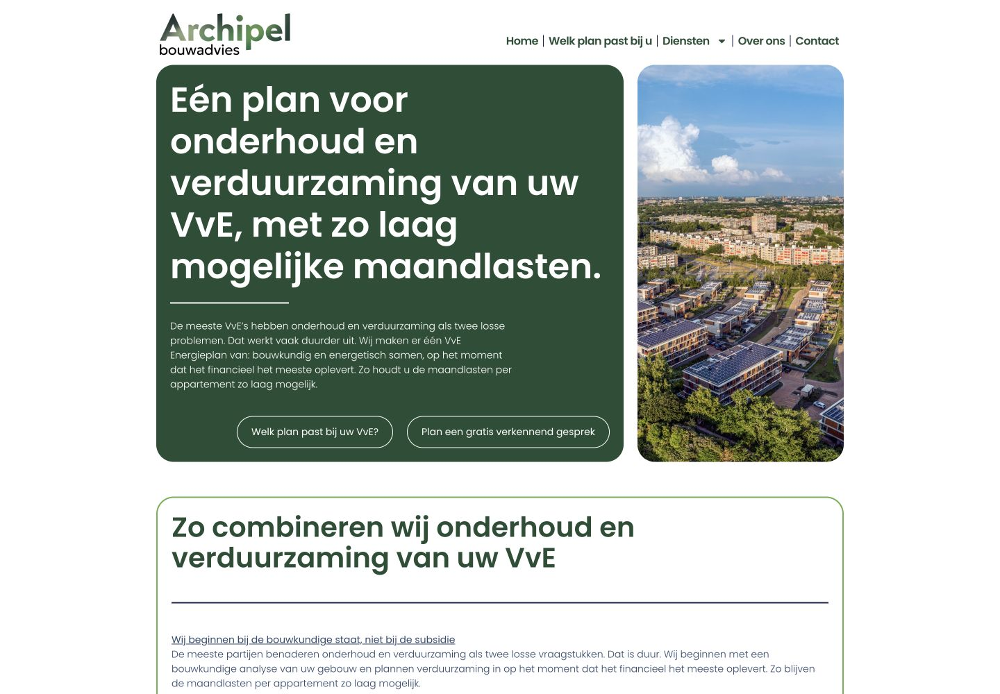
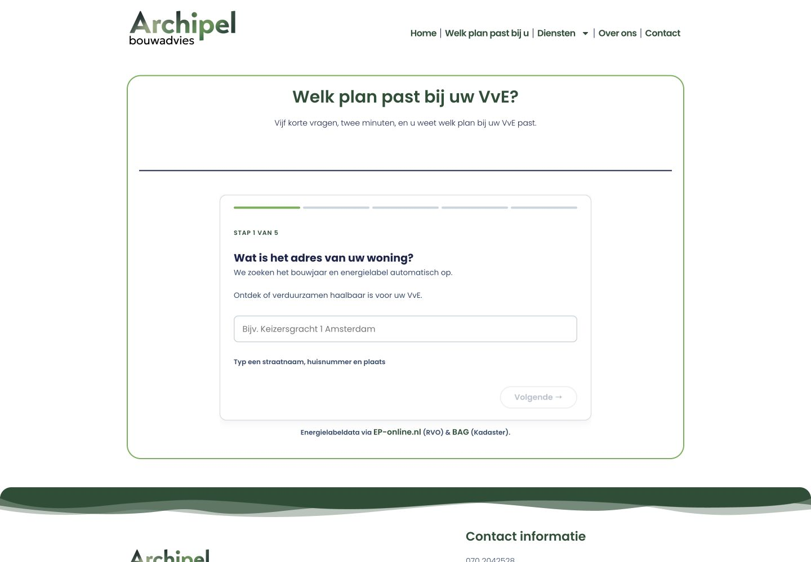
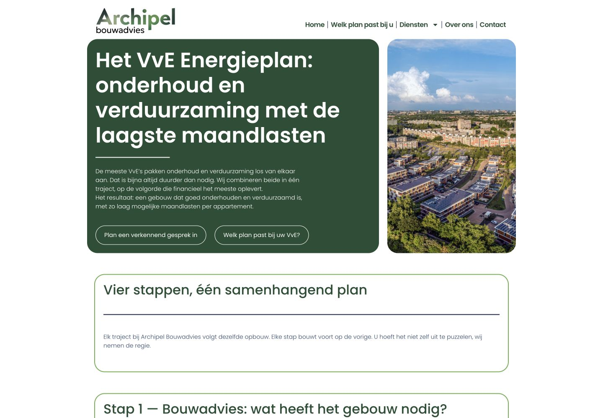

Case
Archipel Bouwadvies
Bouwkundig advies voor VvE's moet duidelijk en betrouwbaar voelen. De site helpt bestuurders snel begrijpen wat er speelt, welke hulp mogelijk is en wat een logische volgende stap is, zonder dat ze eerst door vaktaal heen moeten werken.



Case
Probleem
Archipel Bouwadvies helpt kleine VvE's met inspecties, energieadvies, subsidies en de afstemming met aannemers. Dat zijn onderwerpen waarbij veel informatie samenkomt en waarbij een bestuur eerst wil begrijpen wat er speelt. De website moest daarom niet alleen laten zien welke diensten Archipel aanbiedt, maar bezoekers ook helpen om hun eigen vraag te herkennen.
De uitdaging zat in de samenhang. Een bezoeker die zich oriënteert op verduurzaming heeft een andere eerste vraag dan een bestuur dat een inspectie of adviestraject nodig heeft. Tegelijk horen die onderwerpen wel bij één bouwkundig verhaal. Zonder duidelijke volgorde zou de bezoeker zelf moeten uitzoeken waar hij moest beginnen en welke hulp aansloot op de situatie van de VvE.
Aanpak
De inhoud is geordend rond herkenbare routes voor VvE-besturen. Eerst wordt duidelijk wat Archipel doet en voor wie. Daarna kan de bezoeker verder naar informatie over onder meer verduurzaming en het adviestraject. Iedere route geeft genoeg uitleg om de volgende stap te begrijpen, zonder de pagina's onnodig zwaar te maken met vaktaal.
Bij de opbouw is gekozen voor rustige uitleg en duidelijke keuzes. Belangrijke informatie over inspectie, energieadvies, subsidies en aannemers blijft beschikbaar, maar staat in een volgorde die de oriëntatie ondersteunt. Ook de route naar contact is onderdeel van die structuur: de bezoeker hoeft niet eerst alle pagina's door te nemen om een vraag te kunnen stellen.
Oplossing
De website brengt het bouwkundige aanbod samen in een overzichtelijke presentatie. De homepage introduceert Archipel en geeft toegang tot de belangrijkste onderwerpen. De pagina over het verduurzamen van een VvE en de pagina over het adviestraject werken die onderwerpen vervolgens verder uit. Daardoor blijft de hoofdlijn duidelijk, terwijl er ruimte is voor de inhoud die bij een bouwkundig besluit nodig is.
De vaste opbouw maakt bovendien zichtbaar welke informatie op hoofdniveau thuishoort en welke verdieping een eigen pagina vraagt. Zo blijft de navigatie compact, terwijl de afzonderlijke onderwerpen niet in één lange, algemene uitleg verdwijnen.
- Herkenbare routes voor kleine VvE's en hun bestuurders.
- Duidelijke uitleg over inspectie, advies en verduurzaming.
- Een logische overgang van oriëntatie naar contact.
- Een technische basis voor snelheid, vindbaarheid en beheer.
Uitkomst
Resultaat
De gerealiseerde site geeft de verschillende diensten een duidelijke plek en houdt de samenhang zichtbaar. Bezoekers kunnen vanuit hun eigen vraag door naar relevante informatie en zien vervolgens hoe zij contact kunnen opnemen. Daarmee ondersteunt de website zowel de eerste oriëntatie als een gerichtere intake, zonder daar een meetbaar effect aan toe te schrijven dat niet is onderbouwd.
Herkenbaar?
Moeten bezoekers sneller begrijpen welke hulp ze nodig hebben?
Vertel waar je nu tegenaan loopt. Ik denk mee over welke aanpak past bij je website, organisatie en dagelijkse werk.